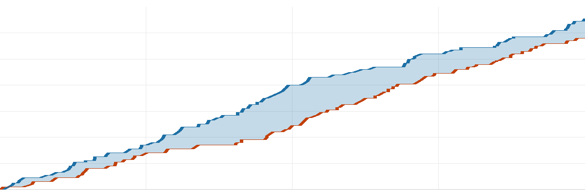

球不落·NBA 每日战报
2026-11-24美国时间
共 3 场 ｜ 每行格式：客队 比分 : 比分 主队
今天 3 场，最胶着的是活塞 104-86 魔术：交替领先 6 次。
推荐比赛1 场
拉今日最胶着
| 1 | 2 | 3 | 4 |
| 分节 | 16-22 | 32-14 | 25-25 | 31-25 |
活塞最多领先 18 分，最终赢 18 分。
| 活塞 | Joe21分4板·詹金斯15分4板10助·赫尔特13分6板5助 |
| 魔术 | 贝恩21分1板5助·瓦格纳20分9板6助·达席尔瓦16分3板1助 |
|
命中率 |
三分 |
篮板 |
助攻 |
失误 |
| 活塞 |
49 | 42 | 42 | 27 | 16 |
| 魔术 |
41 | 33 | 41 | 22 | 20 |
北京 08:00 开球 ｜ 活塞 11-6 ｜ 魔术 7-10
今日最佳一球
小温德尔·卡特 空中接力扣篮
活塞 104-86 魔术 · 第 4 节 剩 4:14
其余 2 场按开球时间
拉今日最平淡
| 1 | 2 | 3 | 4 |
| 分节 | 34-28 | 46-21 | 24-40 | 27-27 |

凯尔特人奇才横轴为比赛进程
凯尔特人最多领先 34 分，末段被追到 15 分。
| 凯尔特人 | 塔图姆41分6板8助·保罗·乔治28分4板9助·克塔21分5板2助 |
| 奇才 | 安东尼·戴维斯33分13板1助·凯肖恩·乔治24分9板3助·AJ·迪班萨20分11板7助 |
|
命中率 |
三分 |
篮板 |
助攻 |
失误 |
| 凯尔特人 |
46 | 43 | 46 | 30 | 10 |
| 奇才 |
45 | 33 | 48 | 25 | 14 |
北京 09:00 开球 ｜ 凯尔特人 12-6 ｜ 奇才 7-12
拉赢 19 分，末节没缠斗
| 1 | 2 | 3 | 4 |
| 分节 | 24-17 | 34-22 | 26-38 | 36-24 |
独行侠最多领先 22 分，最终赢 19 分。
| 独行侠 | 弗拉格24分6板12助·PJ·华盛顿14分6板·纳吉·马歇尔14分1板2助 |
| 掘金 | 穆雷20分2板3助·约基奇18分11板5助·卡梅隆·约翰逊17分5板3助 |
|
命中率 |
三分 |
篮板 |
助攻 |
失误 |
| 独行侠 |
49 | 30 | 48 | 31 | 13 |
| 掘金 |
40 | 31 | 41 | 22 | 18 |
北京 11:00 开球 ｜ 独行侠 11-7 ｜ 掘金 10-6
明日焦点
马刺@开拓者
北京时间 11月26日 11:00 ｜ 开拓者主场
ESPN 全美直播；NBA 杯小组赛；两边都赢得多（15胜3负 / 11胜6负）；文班亚马、杨瀚森 出战
战绩 15胜3负 / 11胜6负
另外这几场
热火@76人北京时间 11月26日 06:00
太阳@火箭北京时间 11月26日 09:30
国王@勇士北京时间 11月26日 11:00
明天全联盟 9 场，上述是值得关注场次
球不落 ｜ 每天一份 NBA 战报，只写场上发生的事
本文基于公开赛事数据独立撰写，与 NBA 及任何转播平台无关联。
比赛日 2026-11-24（美国时间）｜ 数据来源：ESPN